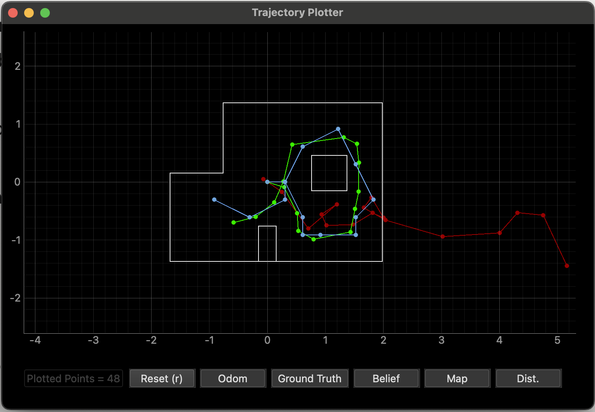
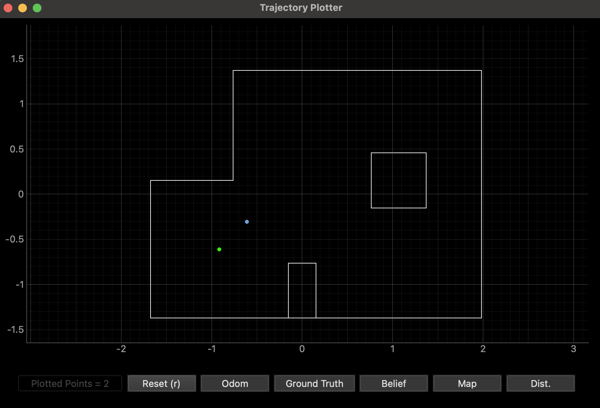
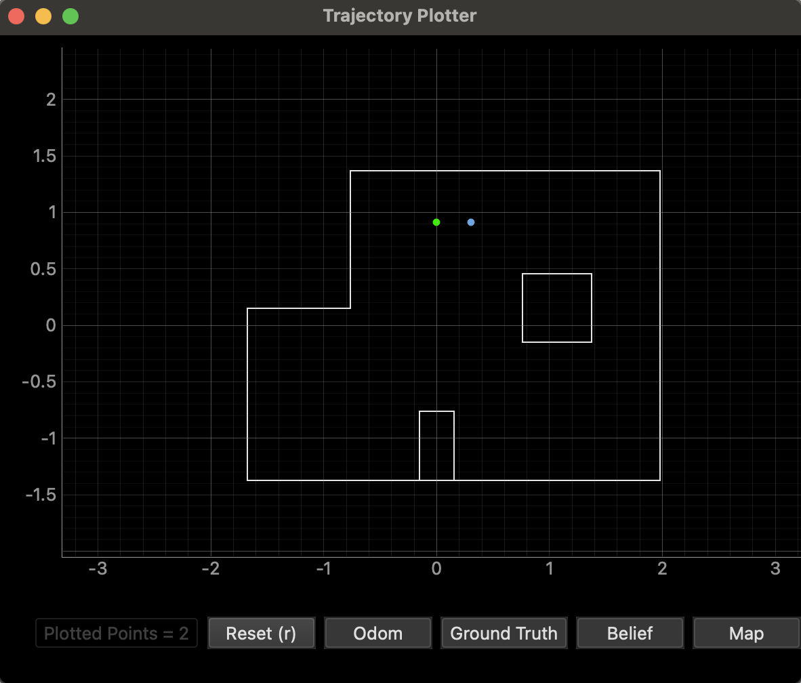
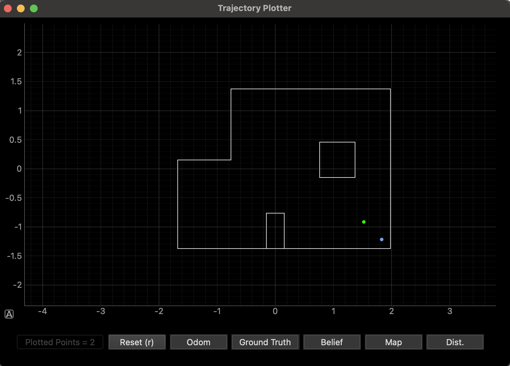
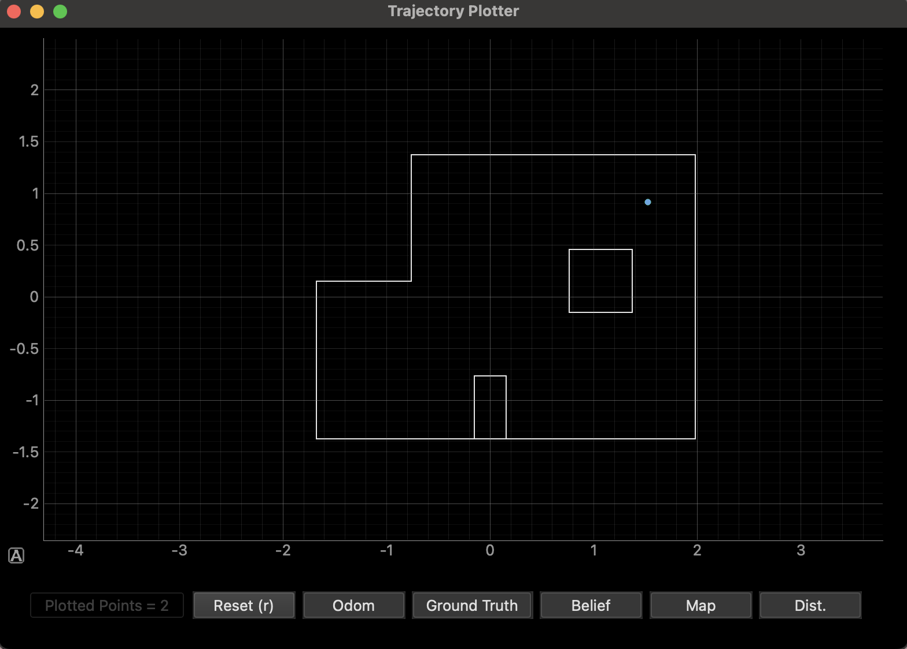
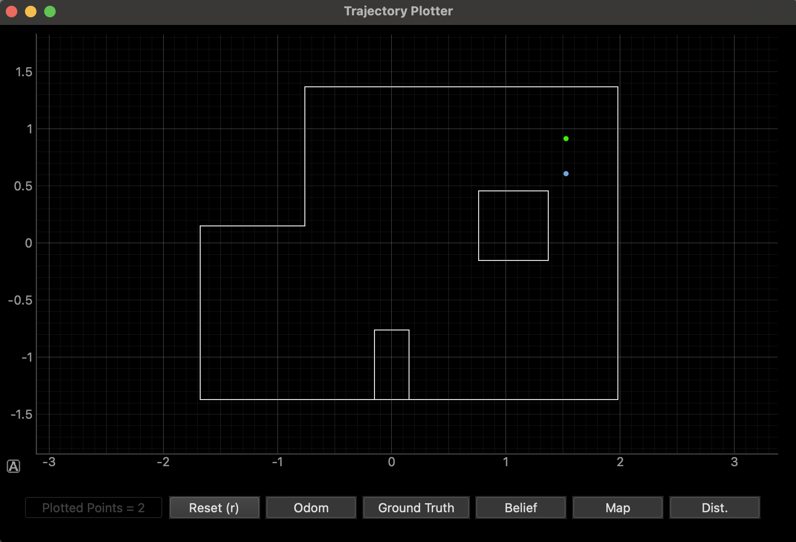
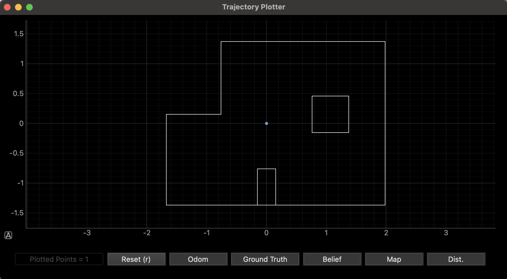

Lab 11: Localization (Real)
04.22.2025 - 04.29.2025
In this lab, we performed grid localization on the real robot using a Bayes filter. Unlike in simulation, we used only the update step with ToF sensor data, since real-world motion was too noisy for accurate prediction. At each of four marked poses, we collected 360° ToF scans, updated the belief grid, and compared the most probable estimated pose to the known ground truth. This lab highlighted the challenges of localization in real-world conditions compared to simulation.
Simulation
Before working with the real robot, we verified the Bayes filter localization in simulation using the lab 11 provided notebook. The image below shows the final plot generated by the simulation.
This result looked very similar to what I observed in Lab 10. My Lab 11 simulation took about 1:32 to run, compared to 1:35 for Lab 10, which confirms that the Bayes filter and localization pipeline were working correctly in simulation before moving to the real robot.
Reality
To localize the real robot, I first implemented a data collection function that processes incoming sensor readings via BLE notifications. The robot sends back distance and yaw measurements at 20° increments while spinning in place during the observation loop.
index = 0
tof_data = [[0.0 for _ in range(1)] for _ in range(18)]
yaw_data = [[0.0 for _ in range(1)] for _ in range(18)]
def data_collect(uuid, byte_array):
global index
global tof_data
global yaw_data
msg = ble.bytearray_to_string(byte_array)
if "," in msg:
data = msg.split(",")
if index < len(tof_data):
tof_data[index] = [float(data[1])]
yaw_data[index] = [float(data[2])]
index += 1
Next, I wrote the perform_observation_loop() function inside the provided RealRobot class. This method commands the robot to rotate in place and collect 18 distance measurements, then packages the data into numpy arrays for the Bayes filter update step.
def perform_observation_loop(self, rot_vel=120):
global tof_data
global index
global yaw_data
index = 0
tof_data = [[0.0 for _ in range(1)] for _ in range(18)]
yaw_data = [[0.0 for _ in range(1)] for _ in range(18)]
self.ble.start_notify(self.ble.uuid['RX_STRING'], data_collect)
self.ble.send_command(CMD.START_MAP, "")
import asyncio
asyncio.run(asyncio.sleep(20))
self.ble.stop_notify(self.ble.uuid['RX_STRING'])
sensor_ranges = np.array(tof_data) / 1000.0
sensor_bearings = np.array(yaw_data)
return sensor_ranges, sensor_bearings
Since the real-world motion of the robot was noisy, I used only the update step of the Bayes filter with these ToF scans. I placed the robot at four marked positions in the arena and performed a full 360° scan at each location: (-3, -2), (0, 3), (5, -3), (5, 3) [ft].
At each position, I ran a single update step, then compared the resulting belief distribution to the expected ground truth pose.
Results
Below are the results for each marked location. The green dot in each plot represents the ground truth, which was manually added in Python for each placement of the robot. The blue dot represents the belief after the Bayes filter update step. The observations at each location were made with 360° scans taken at 20-degree increments. The results show how well the localization algorithm performed at different poses.
(-3, -2)
The update step at this position yielded slightly inaccurate results, with a distance of 0.4306 m from the ground truth. I repeated this test several times and found that the belief remained relatively consistent across trials.
Below, you can see a video of the update step running after collecting mapping data.
(0, 3)
This pose also showed a slight misalignment between the belief and the ground truth, with a distance of 0.305m. This could have been caused by the lab's suggestion that sensor noise can influence the localization process, especially when the robot is placed near features with significant depth differences. In this spot, there was a huge difference in distance to the wall on the left and the distance to the wall on the right. I ran this pose multiple times, and still got the same belief values, which makes me believe that my robot was consistent if not fully accurate. Perhaps the misalignment is due to orientation mishaps.
(5, -3)
The localization results at this position were inconsistent. While a couple of the tests provided a very close match to the ground truth, with a distance of 0.4113 meters, others were very off. In particular, I struggled with the robot believing itself to be in the upper left coordinate, around (0,3). I believe this is because the surrounding environment is pretty similar, but reflected. Many of the ToF readings would have matched, so I think a lot of those predictions were caused by incorrect orientation. The more open space in this area of the arena could have resulted in fewer distinct landmarks for the robot's sensors to rely on. With fewer walls or objects to provide reliable distance readings, the sensor data may have introduced more uncertainty, leading to varied localization results.
(5, 3)
 The belief at this pose was exactly the ground truth in the first run, and slightly off in the second, with a distance of 0.3044m. The second point still showed good accuracy, so I believe that my robot was consistent in predicting this pose.
(0, 0)
I also conducted an additional test at the origin (0,0). As can be seen, the robot yielded very accurate and consistent results, with all three of my tests resulting in beliefs right at the origin.
Notes and Conclusion
I referenced Stephen Wagner's lab report, and worked together with Sana Chawla and Jennie Redrovan.